5.1
How daylight works
Sky and sun, the fast fall of light from a window, and the no-sky line
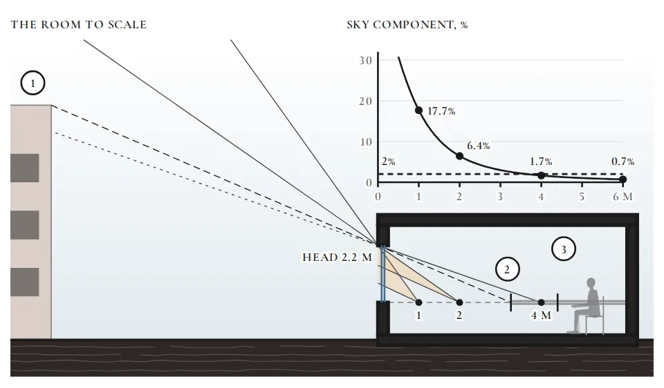
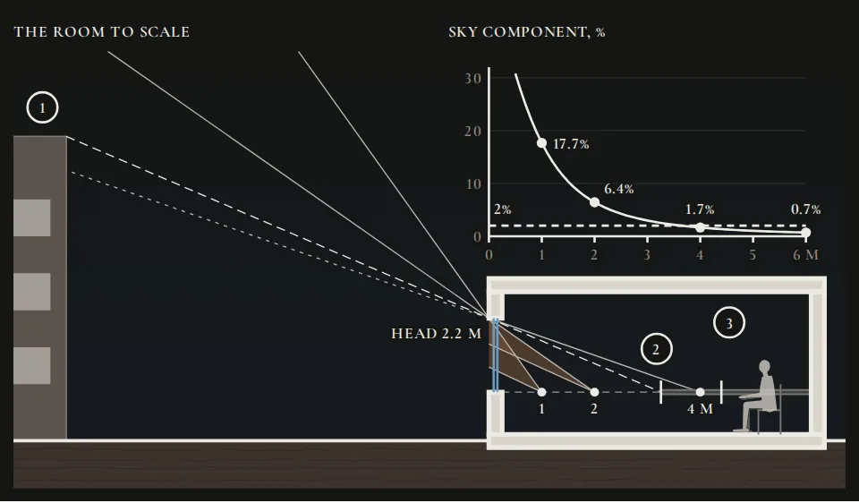
How fast daylight fallsLariboisière ward
Sit at a desk beside a window on a grey morning and read a page of small print. It's easy. Now carry the page to the back of the room, four or five metres from the glass, and read it again. It's harder, though you might not notice at first, because your eyes adjust so well. Hold a light meter up at both places and the difference is startling: the back of the room gets only a small fraction of the light at the window, often less than a tenth.
That steep fall is the single most important fact about daylight in buildings, and it shapes everything from how deep a room can be to where the desks go. This lesson is about where daylight comes from, how it enters a room, how quickly it fades, and the simple rules designers use to get enough of it without too much.
How it works
Daylight comes from two sources. One is the sun: a single, intensely bright beam that moves across the sky through the day and the year, as you learned in the first chapter. The other is the sky itself, the whole bright dome of scattered light. Designers mostly plan daylight around the sky, and especially around a grey, overcast sky, because that's the dullest ordinary condition, the one a room must still work in.
An overcast sky isn't equally bright everywhere. The standard overcast sky, measured in the 1940s and adopted internationally, is three times brighter straight overhead than at the horizon. That has two consequences. From a desk, a high window shows higher, brighter sky than a low one. And a rooflight gets far more than a window of the same size, partly because it sees the whole dome of the sky, where a window sees only half of it, mostly low down, and partly because the brightest part is overhead. Computed for this lesson, an unobstructed rooflight receives about two and a half times as much light from an overcast sky as an unobstructed window.
Now the fall. A point in a room gets its direct daylight from whatever patch of sky it can see through the window. Near the glass, that patch is large and includes bright sky high up. Step back, and the patch shrinks and sinks toward the dimmer horizon. Computed for this lesson, behind an open strip window running the whole width of the wall, from desk height up to 2.2 metres above the floor: one metre from it, the desk sees about a sixth of the light an open field would get from the sky. Two metres back, about six per cent. Four metres back, less than two per cent. Six metres back, less than one. A narrower window, and the glass, make every figure smaller. Light reflected from the walls and ceiling tops them up and softens the back of the curve, but daylight still falls away steeply, then trails off.
Designers measure it with the daylight factor: the light at a point indoors as a percentage of the light outdoors, both under an overcast sky. Britain's 1999 lighting guide called a room with an average under two per cent not adequately daylit, and one over five per cent well lit, though liable to glare and overheating. On a grey day with ten thousand lux outside, two per cent is two hundred lux, dim for reading; five per cent is five hundred, like a well-lit office. Europe's daylight standard of 2018 asks, at its minimum level, for at least three hundred lux over half the room and a hundred lux over nearly all of it, for at least half the daylight hours of the year.
Two rules of thumb follow. First, useful daylight reaches about twice the height of the window head into a room. Sources give anywhere from one and a half to two and a half times, and computer studies find that blinds pull it closer to the window. Second, find the no-sky line: the line on the working surface beyond which you can no longer see any sky through the window at all. Beyond it, a room gets only reflected light, and it tends to look gloomy, however bright the day.
The best examples
_-_btv1b6917672v.jpg){kind=link}
Florence Nightingale's wards, which you met in the chapter on air, were daylit by rule too. Windows about four feet eight inches wide ran from two or three feet above the floor to within a foot of the ceiling, in opposite walls, one window for every two beds, in wards about thirty feet wide and fifteen or sixteen feet high. The tall windows put sky deep into the room from both sides, so no bed was far from the light. Computed from her figures, the glass came to between a quarter and a third of the floor area.
The daylight factor itself has a curious history. From the 1900s on, the English daylight expert Percy Waldram developed ways of measuring daylight from the sky, and a threshold of his, a sky factor of two-tenths of one per cent, about ten lux under his design sky, became the test English courts have used for a century to decide whether a new building has taken a neighbour's right to light. It came to be called the grumble point, the level below which people supposedly complain. A later review found no published evidence behind it.
And the rules of thumb have been tested. In more than twelve hundred computer simulations, a researcher at Canada's National Research Council found that in most cases the daylit depth of an office ran from one to two and a half times the window head height with the blinds open, and from less than one to two times with venetian blinds, depending on the glass and the light level required.
Rules of thumb
One. Keep people who need daylight within about twice the window head height of the window.
Two. Put windows high. The head height sets how far daylight reaches, and the sky is brightest overhead.
Three. Aim for an average daylight factor of at least two per cent. Five per cent is well lit, but watch for glare and heat.
Four. Find the no-sky line, and keep desks and beds on the side of it that can see the sky.
Five. For deep plans, use top light. A rooflight gets about two and a half times the sky light of a window the same size.
Where it fails
Rules for the overcast sky ignore the sun. On a sunny day the same window may flood the front of the room with glare and heat, the blinds come down, and the lights go on. The daylight factor also ignores orientation and climate, which is why newer methods simulate a whole year of real weather. Those have their own problems: four widely used programs, given the same simple building, disagreed by forty points on the share of it that was well daylit. And buildings across the street take their share of the sky, often more than the designer allowed for.
Recap
To sum up. Daylight comes from the sun and from the sky, and designers plan for the overcast sky, which is three times brighter overhead than at the horizon. Light from a side window falls away steeply: even from a full-width window, about a sixth of the open sky's light a metre from it, and less than two per cent at four metres. Measure it with the daylight factor, aim for two per cent or more, keep people within about twice the window head height of the glass and on the sky side of the no-sky line, and use top light where plans are deep.
Check yourself
First question. What is the daylight factor?
The light at a point indoors as a percentage of the light outdoors, both under an overcast sky.
Second question. Roughly how far into a room does useful daylight reach from a side window?
About twice the height of the window head, somewhere between one and a half and two and a half times.
Third question. Why does a rooflight give more light than a window of the same size?
Because it sees the whole dome of the sky, where a window sees only half of it, mostly low down, and the sky overhead is the brightest part. It gets about two and a half times the light.
Sources and further reading
- The overcast sky and the daylight factor: P. Moon and D. E. Spencer (1942), as used in the EnergyPlus Engineering Reference; Wikipedia, Daylight factor, citing CIBSE Lighting Guide 10. The sky shares and the fall of light computed for this lesson with the standard overcast sky.
- Europe's daylight standard: EN 17037 (2018), as summarised in Sustainability 12 (2020).
- The depth rule: C. F. Reinhart, Building Simulation (2005).
- The no-sky line: Designing Buildings Wiki, No sky line.
- Climate-based metrics: IES LM-83, as reviewed at SimBuild (2020).
- Nightingale: F. Nightingale, Notes on Hospitals, third edition (1863); research edition, chapter 3 (C3.18). Glass area computed for this lesson.
- Waldram and the right to light: Wikipedia, Right to light; P. Chynoweth, on the Waldram sky factor; research edition, chapter 4 (C4.25).
- Further reading: C. Reinhart, Daylighting Handbook (2014).
5.2
Top light
The oculus, the lantern and the clerestory
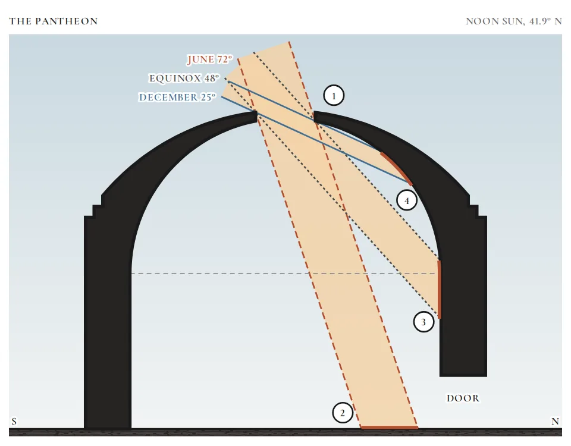
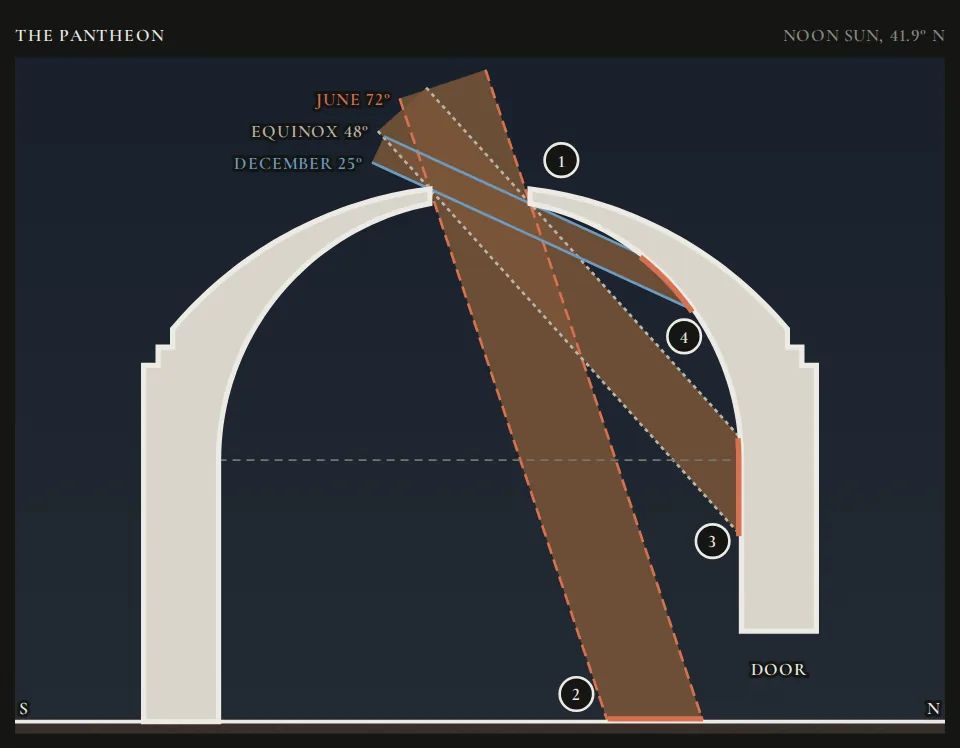
The Pantheon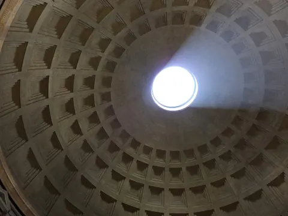
Pantheon oculus, RomeKimbell Art Museum
Walk into the Pantheon in Rome at noon on a clear day in December. The great dome closes over you, forty-three metres across and forty-three metres high, and its only window is a round hole at the top, about eight metres wide, open to the sky. Through it, the sun throws a bright oval onto the curve of the dome, high up on the north side, above the door you came in by. Come back in June and, at noon, that patch of sun lies on the marble floor. When it rains, the rain falls straight through the hole, onto a floor that slopes gently to drains that carry the water away.
For nearly nineteen hundred years that one opening has lit one of the largest rooms of the ancient world. This lesson is about light from above: the open oculus, the skylight and the lantern, and the clerestory, a row of windows high on the wall. You'll learn why top light is so generous, how to keep its sun under control, and how three very different buildings made it gentle.
How it works
Top light looks straight up at the sky, and that is its great advantage. It sees the whole dome of the sky, where a window sees only half of it, mostly low down. And as you learned in the last lesson, an overcast sky is three times brighter overhead than at the horizon, so a rooflight looks straight at the brightest part. An unobstructed rooflight receives about two and a half times the sky light of a window the same size. And because the light comes down from above, it can reach the middle of a deep plan, and it spreads far more evenly across the floor than light from a side window, which falls away steeply from the glass.
So top light doesn't need to be large. The Pantheon's oculus is less than a twentieth of its floor area, about four per cent. For houses, the US Department of Energy suggests skylights of no more than about five per cent of a room's floor area where the room already has plenty of windows, and up to fifteen per cent where it has few.
The price of top light is the sun. A rooflight takes in the high summer sun, the hottest there is, and throws it straight down as glare and heat. So good top light is almost always shaped: set in a deep well, which spreads the light and cuts off the steep sun; bounced off a reflector or a white surface before it reaches the room; or turned into a clerestory, a vertical window high in the wall, which can be shaded or turned away from the sun far more easily than a hole in the roof.
The lantern is the old answer to both: a small raised structure on a roof or dome, glazed on its sides, that gathers sky light from all around and drops it into the space below.
The best examples
.jpg){kind=link}
The Pantheon was rebuilt under the emperor Hadrian and finished in the 120s. Its dome is a half-sphere set on a cylindrical drum just as tall, so a whole sphere would fit inside, and its oculus is about eight and a third metres across; some accounts give thirty Roman feet, nearly nine. Computed for this lesson from those dimensions, the noon sun at the winter solstice strikes the dome about thirty-six metres up; at the equinoxes it reaches the band where the dome springs from the drum; and at the summer solstice it lands on the floor. The archaeoastronomers who studied it think the builders knew what they were doing with the sun, but they stress it was not built as an observatory.
In the Gothic cathedrals, top light came through the clerestory, the high row of windows above the aisles. Ribbed vaults and flying buttresses freed the upper walls from carrying weight, so they could become glass: at Chartres, the clerestory lancets are almost as wide as the windows of the aisles below. Even plain window glass then let through surprisingly little: fifteenth- and sixteenth-century glass from a castle in Flanders is estimated to have passed only a fifth to a third of the light when new.
At Viipuri, now Vyborg, Alvar Aalto finished a library in 1935 whose reading hall is lit from above by many deep, round rooflights. Aalto described sketching mountain landscapes lit by many suns, and the deep wells were designed to spread daylight evenly across the reading desks, without harsh glare.
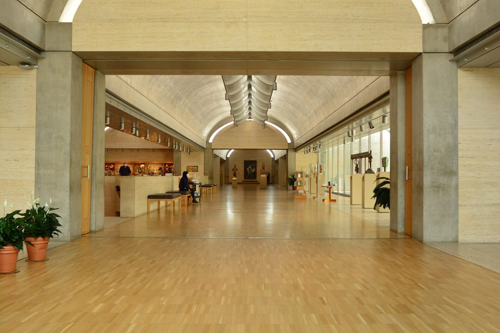

And in 1972, at the Kimbell Art Museum in Fort Worth, Texas, Louis Kahn roofed the galleries with long concrete vaults, each with a narrow skylight along its crown. Under every skylight hangs a wing-shaped reflector of pierced aluminium, designed with the lighting designer Richard Kelly to keep the Texas sun off the paintings and throw its light up onto the curved concrete, which glows a soft silver. From below you see the vault, not the opening.
Rules of thumb
One. Use top light for deep plans and for rooms where a view out matters less than even light. It gives about two and a half times the sky light of a window the same size.
Two. Keep it small. A few per cent of the floor area goes a long way; the Pantheon lights its vast room with about four per cent.
Three. Never let the high sun fall straight onto people or work. Use a deep well, a reflector, a diffusing layer, or a clerestory you can shade.
Four. Spread the openings out. Many small rooflights, like Viipuri's, give more even light than one big one.
Five. Make the light land on something. A pale ceiling, a vault or a wall that catches the light and passes it on is what makes top light feel soft.
Where it fails
Rooflights overheat rooms in summer, lose heat in winter, and let in glare whenever the high sun can reach them. They leak, they gather dirt and snow, and they need cleaning where few people can reach. They give no view out, and a room lit only from above can feel shut in. The Pantheon has no glass at all, so it gets the rain as well as the light. And not every celebrated rooflight has been tested: as far as the research edition could find, no one has ever measured the light in Aalto's reading hall at Viipuri.
Recap
To sum up. Top light sees the brightest part of the sky, so a rooflight gets about two and a half times the light of a window the same size, and it spreads that light evenly and deep into a plan. Keep it small, a few per cent of the floor. Control its sun with deep wells, reflectors, diffusers and clerestories, and give the light a pale surface to land on. The Pantheon, the Gothic clerestory, Viipuri and the Kimbell are four ways of doing it.
Check yourself
First question. Why can top light be so much smaller than side windows for the same amount of light?
Because it looks up at the brightest part of the sky and sees all of it. A rooflight gets about two and a half times the light of a window of the same size, and spreads it more evenly.
Second question. Where does the noon sun fall inside the Pantheon in December, and where in June?
In December, high on the dome, above the entrance. In June, on the floor.
Third question. How does the Kimbell Art Museum keep the Texas sun off its paintings?
With a narrow skylight along the top of each vault and a pierced aluminium reflector beneath it, which bounces the light onto the curved concrete ceiling.
Sources and further reading
- The overcast sky and rooflights: lesson 5.1 and its sources; US Department of Energy, Energy Saver, Skylights. Shares computed for this lesson.
- The Pantheon: R. Hannah and G. Magli, The role of the sun in the Pantheon's design and meaning (2011); Wikipedia, Pantheon, Rome; research edition, chapter 1 (C1.17). Sun positions computed for this lesson.
- The clerestory: Encyclopaedia Britannica, Clerestory; UNESCO World Heritage List, 81, Chartres Cathedral; W. Meulebroeck and colleagues, Scientific Reports (2021), on medieval window glass; research edition, chapter 2 (C2.31).
- Viipuri: Alvar Aalto Foundation, Viipuri Library; Wikipedia, Vyborg Library; research edition, chapter 4 (C4.14).
- The Kimbell: Kimbell Art Museum, the Kahn Building; Wikipedia, Kimbell Art Museum.
- Further reading: J. Lobell, Between Silence and Light: Spirit in the Architecture of Louis I. Kahn (1979).
5.3
Filtered light
Screens, jali, mashrabiya and shoji
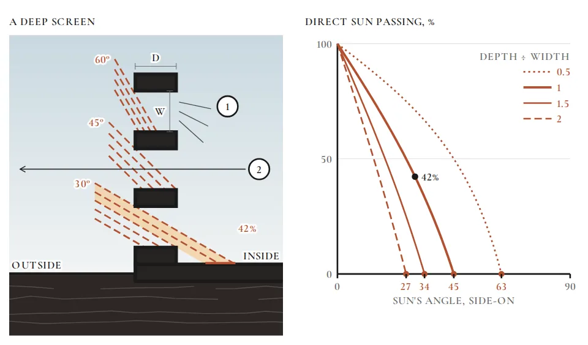
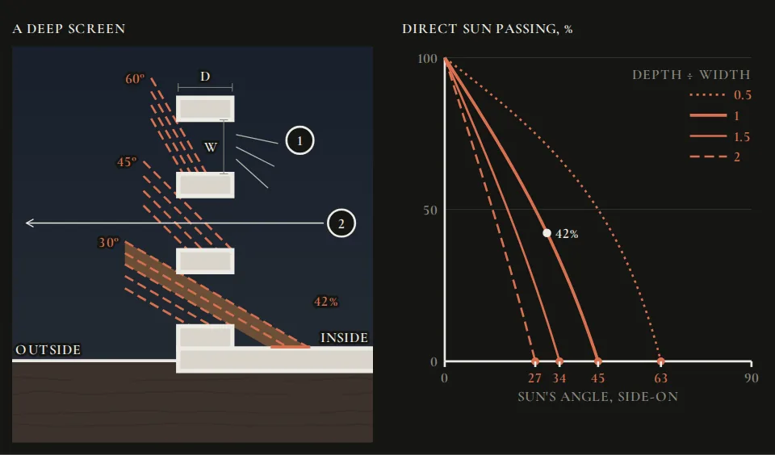
How a deep screen filters the sun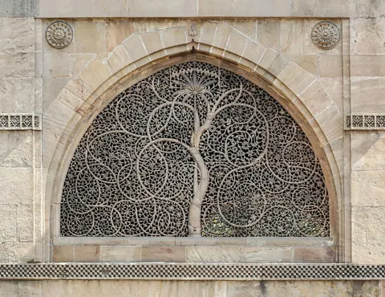
Sidi Saiyyed jali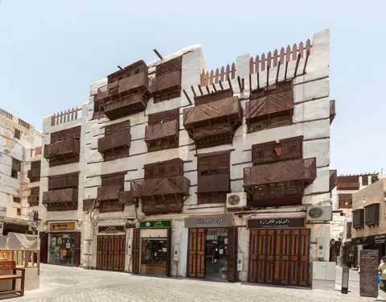
Roshan, Jeddah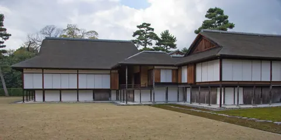
Katsura villa, Kyoto
It's late afternoon in Ahmedabad, in western India, and you're standing inside the small Sidi Saiyyed mosque, built in 1572 and 1573. In the arched windows of its back wall are screens of stone, called jali, and in two of them the stone has been cut into a tree: a trunk, curling branches and tendrils and palm leaves, each screen carved from a single slab. Light comes through the gaps between the branches in hundreds of small bright shapes, and the stone around them glows. From outside, it's a picture of a tree. From inside, it's a tree's own shade, turned into a window. The screen has become the unofficial symbol of the city.
A screen does something a sheet of glass can't. It breaks up the sun, softens the light, lets air through, gives privacy, and still lets you glimpse the world outside. This lesson is about filtered light: the stone jali of India, the timber mashrabiya of the Arab world, the paper shoji of Japan, and the simple geometry that makes a good screen work.
How it works
Every screen is a sheet with holes in it, and the holes have depth. That depth is the key. Picture a screen whose openings are as deep as they are wide. Sun striking it at a low angle passes straight through the holes. But as the sun climbs, the sides of each hole start to shade it, and above a certain angle no direct sun gets through at all. The rule is simple, computed for this lesson: direct sun is blocked completely once its angle, seen side-on, rises above the angle whose tangent is the opening's width divided by its depth. Openings as wide as they are deep block the direct sun above forty-five degrees. Make them half again as deep as they are wide, and the sun is cut off above about thirty-four degrees.
So a deep screen shuts out the high sun of midday, the hottest, while still letting in the sky's light, a glimpse of the world at eye level, and the breeze. What does get through arrives broken into small patches, dappled like light under a tree, and the edges of each opening, lit by the sun, glow and soften the contrast between the bright outside and the room.
The mashrabiya takes this further. It's a bay window projecting from an upper floor, screened with turned wooden spindles, and traditionally its openings were made smaller low down, where people sit close to them, and larger higher up, which by one account speeds the flow of air overhead.
Paper works differently. A shoji is a sliding screen of translucent paper, traditionally washi, stretched on a light wooden lattice. It lets no view through and no direct sun, but it glows: it turns the sun or the sky into a soft, even light that spreads across the room, with no hard shadows.
The best examples

The Sidi Saiyyed jali, from the opening, shows how much a screen can say. It admits nature and depicts it with the same piece of stone. The Indian Institute of Management at Ahmedabad took it as its logo.

The mashrabiya lines the old streets of Jeddah, in Saudi Arabia. In Jeddah these bays are called roshan. The word mashrabiya probably comes from the Arabic for a place of drinking, and some held porous water jars that cooled the air passing over them. When researchers measured two identical rooms in one old Jeddah house through a hot August, they measured air and heat, not light, and found the open screen a powerful air device. With its lattice open by day, the room was up to about two and a half degrees cooler, and the air inside moved at up to nearly seven metres a second at the screen, against barely one with the lattice shut.
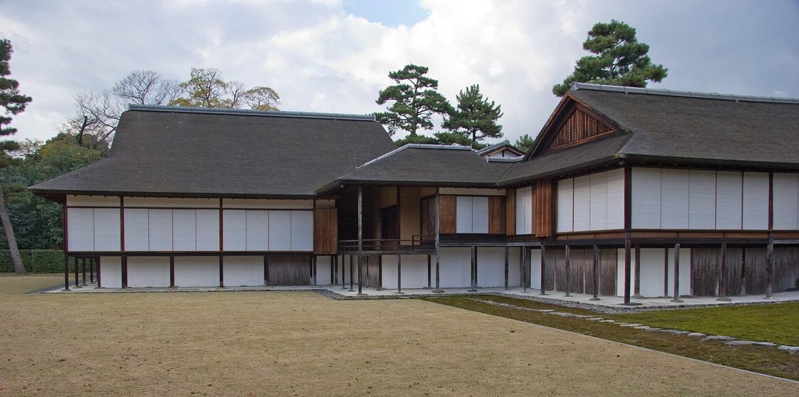
.jpg){kind=link}
In Kyoto, the Katsura Imperial Villa, built in the seventeenth century, is a sequence of rooms opened and closed by layers: deep eaves, a veranda, sliding shoji of paper, and opaque fusuma of painted paper within. Slide them one way and the rooms open to the garden and its moon-viewing platform of bamboo; slide them the other and the light turns soft and even. When the German architect Bruno Taut visited in the 1930s, he praised it as a model of modern simplicity, and architects have studied it ever since.
Rules of thumb
One. Make screens deep enough to block the high sun. Openings as wide as they are deep cut off direct sun above forty-five degrees; deeper openings cut it off lower.
Two. Make openings smaller at eye level and larger above, for privacy and less glare where people sit, and more light and air overhead.
Three. Put the screen in front of the glass, or in front of an opening that can stay open, so it stops the sun before it enters, and lets the breeze through.
Four. Use translucent layers, paper, fabric or frosted glass, where you want even light without direct sun or view.
Five. Let people adjust them. Sliding, folding and opening screens let one room be dim and cool at noon and open to the garden in the evening.
Where it fails
Screens cut the light as well as the sun, and on dull days, or in cloudy climates, a heavily screened room can be dark. They cut the view too, and a screen can feel like a cage if its openings are small and it covers the whole window. Timber and paper need care: paper tears and is replaced, timber lattices dry, crack and burn. And the claims are ahead of the evidence. As far as the research edition could find, no one has measured the daylight inside a historic jali, mashrabiya or shoji. The one Jeddah study measured air and heat, not light.
Recap
To sum up. A screen is a sheet of holes with depth, and the depth lets it block the high sun while admitting sky light, air and a glimpse of the world. Openings as wide as they are deep cut off direct sun above forty-five degrees. The jali and the mashrabiya filter sun and air; the shoji turns light into an even glow. Put screens in front of the glass, make openings smaller at eye level, and let people move them.
Check yourself
First question. Why does a deep screen block the high midday sun but let in sky light and a view?
Because the sides of each opening shade it once the sun climbs above a certain angle, set by the opening's width divided by its depth. Low light and views pass straight through.
Second question. What did the measurements in Jeddah show the open mashrabiya doing?
Cooling the room and moving far more air. With the lattice open by day, the room was up to about two and a half degrees cooler, and the air moved much faster.
Third question. What does a shoji screen do to light?
It turns direct sun or sky light into a soft, even glow, with no view through it and no hard shadows.
Sources and further reading
- The geometry of screens: computed for this lesson.
- Sidi Saiyyed: Sahapedia, Sidi Sayyid's jali, Ahmedabad; Wikipedia, Sidi Saiyyed Mosque; research edition, chapter 2 (C2.11).
- The mashrabiya: Wikipedia, Mashrabiya; A. A. Bagasi, J. K. Calautit and A. S. Karban, Energies 14 (2021); research edition, chapter 2 (C2.4).
- Shoji and Katsura: Wikipedia, Shōji, and Katsura Imperial Villa; Columbia University, on Bruno Taut and Katsura; research edition, chapter 2 (C2.10).
- Further reading: W. Gropius, K. Tange and Y. Ishimoto, Katsura: Tradition and Creation in Japanese Architecture (1960).
5.4
Glare and shadow
Comfortable light, and darkness as a material
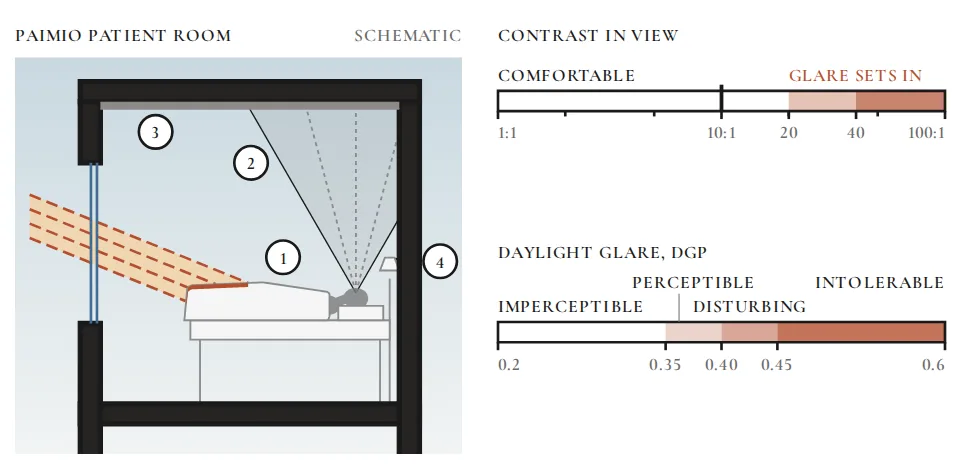
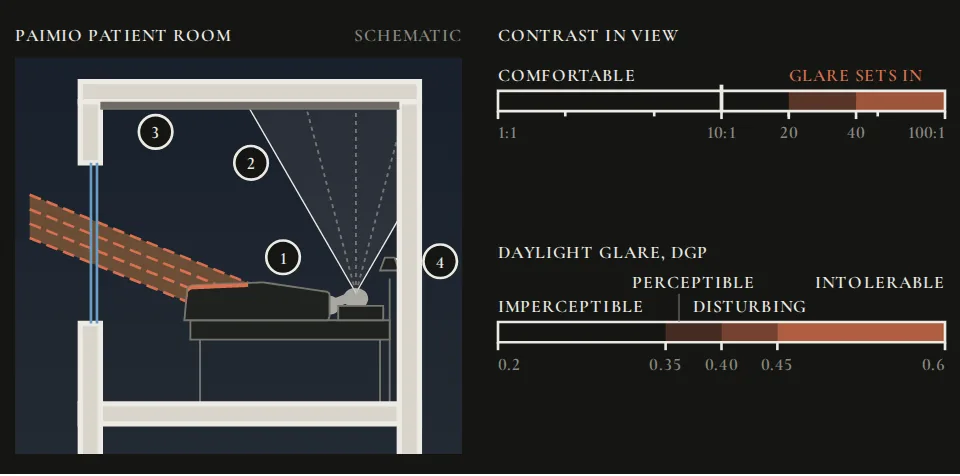
Glare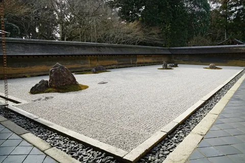
Ryōan-ji garden, KyotoPaimio Sanatorium
Imagine lying in bed for months. That was the life of a patient at a tuberculosis sanatorium in the 1930s: rest, fresh air, and the ceiling. When Alvar and Aino Aalto designed the Paimio Sanatorium in Finland, finished in 1933, they designed the patient's room for a person lying down. The ceiling was painted a soft, muted colour, not white, so it wouldn't glare. The lamps were placed out of the line of sight of the person in bed. Even the washbasin was shaped so water would run down its side without splashing and disturbing a sleeping neighbour. Aalto argued to the doctors that the morning sun should fall on the beds.
Most design for light is about getting more of it. This lesson is about getting it right: the difference between bright and dazzling, why contrast matters more than quantity, and the other half of light, shadow, which some traditions have treated as something to design with, not something to get rid of.
How it works
Glare is brightness in the wrong place. It comes in two kinds. Disability glare makes it harder to see, like the headlights of an oncoming car at night or a low sun on a screen. Discomfort glare doesn't stop you seeing, but it tires and irritates you, and people deal with it by closing the blinds, which is how a well-daylit building ends up lit by electric lights.
What your eye objects to is less the amount of light than the contrast. Your eyes adapt to the general brightness of a scene. A window full of bright sky in an otherwise dim wall is uncomfortable, while the same window set in a pale wall, with light falling on the surfaces around it, is fine. Daylighting guidance suggests keeping variations in brightness across a view to about ten to one, and warns that glare sets in somewhere between twenty and forty to one.
For daylight, engineers now estimate glare with a number called the daylight glare probability. Europe's daylight standard grades it: below about 0.35, glare is imperceptible; from 0.35 to 0.40, perceptible; from 0.40 to 0.45, disturbing; above 0.45, intolerable. Research in the tropics suggests people there are bothered at lower levels, so the thresholds are still argued.
The cures follow from the causes. Keep bright sources out of the line of sight of people who can't move, like the bedridden patient, or someone at a fixed desk. Brighten the surfaces around a bright window, with pale walls, pale ceilings and splayed reveals, so the eye isn't asked to jump from dark to bright. Keep direct sun off work surfaces and screens. And give people a way to control what they see: blinds, curtains, or simply a chair they can turn.
Then there's shadow. Light with no shadows at all, from every direction, is flat and tiring, and it hides the shape of things. Shadow shows form, depth and texture, and dimness can be restful. Some rooms want to be dark: a bedroom, a bath, a place of prayer.
The best examples
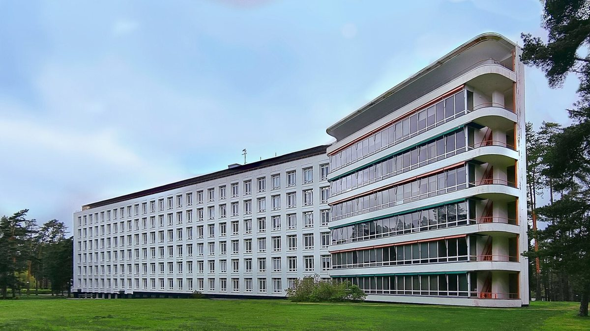

The Paimio patient room, from the opening, is the clearest case of designing light around the person who has to live with it. Sources disagree on the ceiling's colour, a greyish green in one account and simply dark in the Aalto Foundation's, and the first gives the reason: to spare a patient who looks at the ceiling all day from glare.
In 1933, the Japanese novelist Jun'ichirō Tanizaki published a short essay, In Praise of Shadows. He set the Western pursuit of brightness against an older Japanese taste for dimness: lacquerware that only shows its depth by candlelight, paper screens that absorb light instead of reflecting it, and the shadowed alcove of a traditional room. He argued that beauty lives in the gradations of shadow, and that electric light was erasing it. The essay has influenced architects from Charles Moore to Tadao Ando and Kengo Kuma.
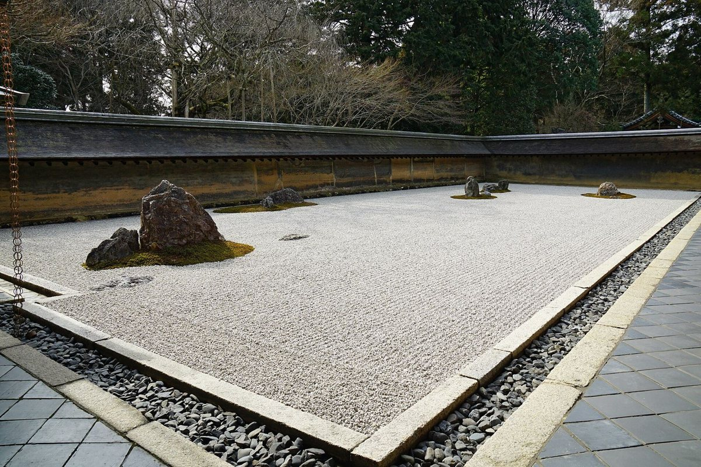

You can see what he meant in Kyoto's old townhouses, the machiya: narrow, deep buildings, often five and a half to six metres wide and twenty metres deep, lit by small courtyard gardens that bring daylight into the middle of the house, so the rooms step from light to shade and back again. And at the temple of Ryōan-ji, in Kyoto, the dry garden of fifteen stones on raked gravel, about twenty-five by ten metres, is meant to be looked at from the shade of the veranda, sitting down. From any one place on the veranda, at least one of the stones is always hidden.
Rules of thumb
One. Keep bright windows and lamps out of the line of sight of people who can't move, seated or lying down.
Two. Limit contrast. Aim for no more than about ten to one between the brightest and darkest parts of the view; beyond twenty to forty to one, expect glare.
Three. Brighten the surfaces next to a bright window: pale walls and ceilings, and reveals splayed to catch the light.
Four. Give people control of the light: blinds, curtains, and furniture they can move.
Five. Design the dark as well as the light. Decide which rooms should be dim and restful, and let shadow show form and depth.
Where it fails
Glare rules are only as good as their assumptions, and the thresholds are still argued, especially for hot, bright climates. Controls fail when nobody uses them, or when blinds stay down all day, and the lights stay on. Dimness is beautiful in a tea room and miserable at a desk, so the same essay that praises shadow is a poor guide for an office. And the celebrated designs are mostly unmeasured. At Paimio, as far as the research edition could find, no one has ever measured the light, the sun or the temperature in a patient's room, then or since.
Recap
To sum up. Glare is brightness in the wrong place, and contrast matters more than quantity: keep the brightest and darkest parts of a view within about ten to one, and expect glare beyond twenty to forty. Keep bright sources out of the sight lines of people who can't move, brighten the surfaces around windows, and give people control. And treat shadow as a material: it shows form, rests the eye, and suits some rooms better than light.
Check yourself
First question. What is the difference between disability glare and discomfort glare?
Disability glare makes it harder to see, like oncoming headlights. Discomfort glare lets you see but tires and irritates you, and makes people close the blinds.
Second question. How did the Aaltos protect bedridden patients at Paimio from glare?
They gave the ceiling a soft, muted colour instead of white, and put the lamps out of the patient's line of sight.
Third question. What did Tanizaki argue in In Praise of Shadows?
That beauty lives in the gradations of shadow, in lacquer by candlelight, paper screens and dim alcoves, and that bright electric light was erasing it.
Sources and further reading
- Glare and contrast: VELUX, Daylight, Energy and Indoor Climate Book, Daylighting quality; EN 17037, as reviewed at Building Simulation (2021); Wikipedia, Glare (vision).
- Paimio: Wikipedia, Paimio Sanatorium; Alvar Aalto Foundation, Paimio Sanatorium; M. Heikinheimo, Arts 7 (2018); research edition, chapter 4 (C4.13).
- Tanizaki: Wikipedia, In Praise of Shadows; Stanford Encyclopedia of Philosophy, Japanese aesthetics.
- Kyoto: Wikipedia, Machiya, and Ryōan-ji; UNESCO World Heritage List, 688, Historic Monuments of Ancient Kyoto; research edition, chapter 2 (C2.10).
- Further reading: J. Tanizaki, In Praise of Shadows, translated by T. J. Harper and E. G. Seidensticker (1977).
5.5
Light and the day
Daylight, the body clock, and what glass can and cannot do
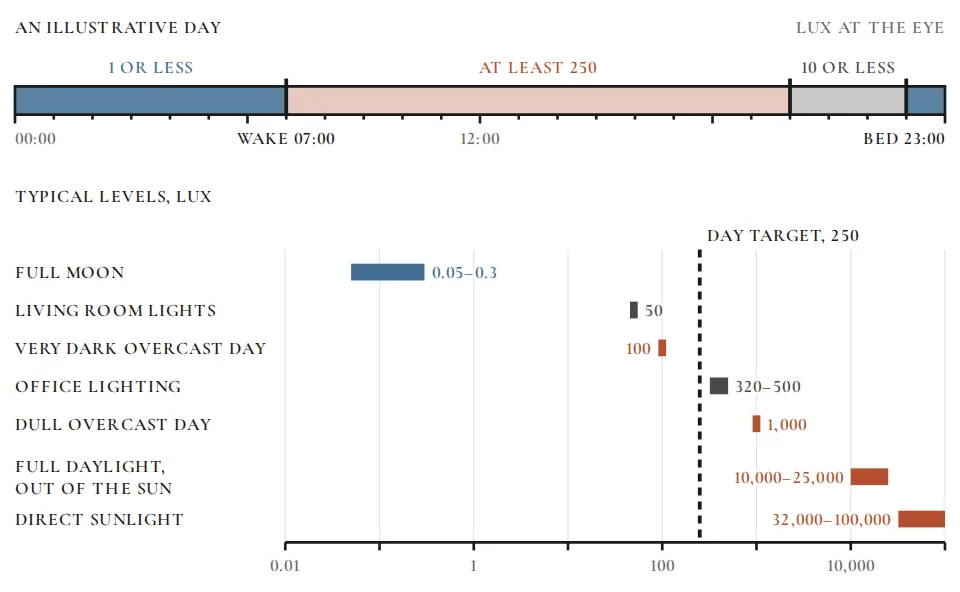
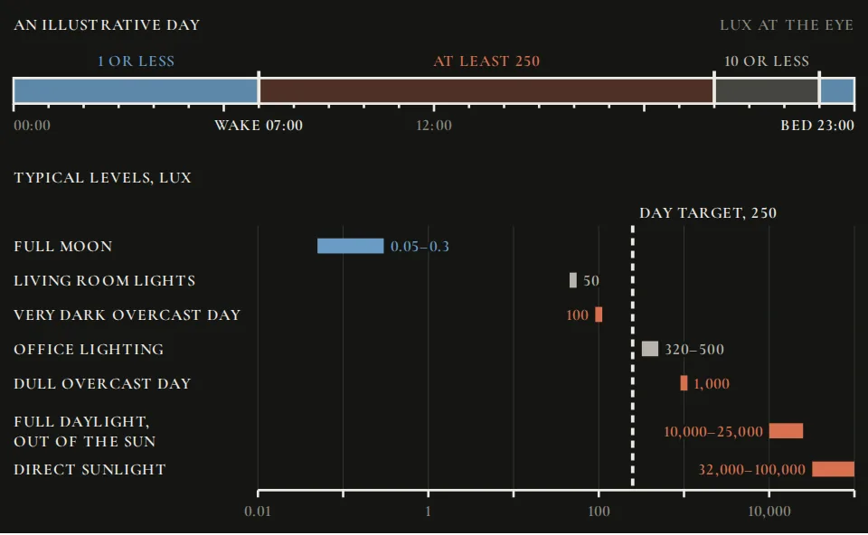
Light and the body clock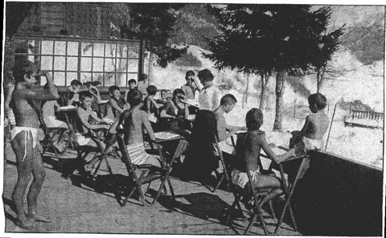
Sun school, Leysin
It's a summer morning in the early 1910s at Leysin, high in the Swiss Alps. On terraces facing the sun, rows of patients with tuberculosis of the bones and joints lie on their beds, lightly covered, in the mountain air. Their doctor, Auguste Rollier, doses the sun like a medicine. On the first day, five minutes on the feet. Then more, a little higher up the body each day, until after about two weeks the whole body is in the sun, two or three hours a day in summer, early in the morning, before it grows hot. His newest clinic is built for it, with sun terraces, balconies and a solarium on the roof.
Rollier's sun cure ran for decades, until antibiotics replaced it. After the First World War he reported that about four in five of his patients had recovered, though with no comparison group, so nobody can say how many would have recovered anyway. His buildings asked a question that architecture is still answering: what does daylight do for the body, beyond letting us see? This lesson is about the body clock, how much light people need and when, what windows do for us, and what glass can't do.
How it works
Your body runs on a clock of about twenty-four hours, and daylight sets it. Besides the cells in your eyes that let you see, there are others, sensitive above all to bright, bluish light, that tell the brain whether it's day or night. Bright light by day keeps the clock in time, helps you feel alert, and helps you sleep at night. Light late in the evening pushes the clock later, and makes sleep harder.
The amounts matter, and they're very different outdoors and in. On a dark, dull day the light outside can fall to around a thousand lux; in full daylight out of direct sun, it's ten thousand to twenty-five thousand; in direct sunlight, up to a hundred thousand. A typical office is lit to three hundred to five hundred lux. So even a bright room is dim compared with the outdoors, and the few metres nearest a window get far more daylight than the rest, as you learned in the first lesson of this chapter.
In 2022, a group of sleep and light scientists agreed on a first set of recommendations, measured at the eye with a measure that weights light by how strongly it affects the body clock. By day, at least two hundred and fifty lux, measured in that body-clock-weighted way, so warm, yellowish electric light needs more ordinary lux to reach it. In the three hours before bed, no more than ten. And while sleeping, no more than one. The WELL building standard asks for a similar daytime level at most desks, at least in the morning.
Glass changes daylight, too. Ordinary window glass lets through visible light and the longer ultraviolet, but it blocks the short ultraviolet, called UVB, which is what the skin needs to make vitamin D. So sitting in a sunny window doesn't give you vitamin D. Rollier's patients lay out in the open air for a reason.
The best examples
.png){kind=link}
Rollier's clinic of 1911, Les Frênes, was built as an instrument for the sun: open sun terraces on one wing, covered balconies on the other, and, because the covered balconies caught too little of the summer sun, a solarium over the whole roof, where bedridden patients were taken up by lift. It measured nothing itself, but it made a building's orientation a part of the treatment.
The best-known evidence for windows is not about light at all, but about the view. In 1984, the researcher Roger Ulrich compared the records of patients recovering from gallbladder surgery in a Pennsylvania hospital between 1972 and 1981. Twenty-three whose windows looked out on trees were matched with twenty-three whose windows faced a brick wall. The patients with the tree view left hospital sooner, on average in about eight days instead of eight and three-quarters, had far fewer negative comments in their nurses' notes, and needed fewer strong painkillers. It's a small study from one hospital, and, as far as the research edition could find, it has never been directly repeated, but it helped launch the modern study of nature and health.
Offices tell a similar story. In the 1960s and 1970s, researchers asked people what they thought of windowless workplaces. In Seattle, nearly nine in ten of a hundred and thirty-nine women working in windowless offices were dissatisfied, and half believed it harmed them or their work. Brighter lighting and warm colours didn't change their minds. In a British study, eighty-nine per cent of office workers said they wanted to be able to see out.
And in 2014, a small study by researchers from Northwestern University and the University of Illinois compared forty-nine office workers, twenty-two of them with windows at work. Those with windows were exposed to much more light during the day, slept longer, and reported sleeping better. It was a pilot, but it points the same way as the others.
Rules of thumb
One. Give everyone who spends the day indoors daylight and a view out, with their place of work within about twice the window head height of the window.
Two. Aim for bright days: at least two hundred and fifty lux at the eye, of daylight or daylight-like light, through the day.
Three. Plan for dim evenings: no more than ten lux in the three hours before bed, and dark bedrooms, of one lux or less, for sleep.
Four. Give people a view of something living: trees, sky, weather and people.
Five. Don't count on glass for everything the sun does. Offer balconies, terraces and gardens where people can be out in daylight itself.
Where it fails
The evidence is thinner than the enthusiasm. Rollier's cures had no comparison group. Ulrich's study, as far as we could find, has never been repeated. The window-and-sleep study was a pilot with forty-nine people. The recommendations for light at the eye are a first expert consensus, not a settled standard, and they depend on where people actually look. And more daylight is not always better: big windows bring glare and summer heat, and the blinds that people draw against them take the daylight away again.
Recap
To sum up. Daylight sets the body clock: bright light by day, dim light in the evening and darkness at night. Outdoors by day is usually tens of times brighter than a lit room, and only the space near a window gets much of it. Aim for at least two hundred and fifty lux at the eye by day, ten or less in the evening, and one or less for sleep. Give people a view out, and places to be outside, because glass stops the ultraviolet the skin needs for vitamin D.
Check yourself
First question. How much light do the 2022 recommendations allow in the three hours before bed?
No more than ten lux at the eye, measured in the way that counts for the body clock.
Second question. Why doesn't sitting in a sunny window give you vitamin D?
Because window glass blocks the short ultraviolet, UVB, that the skin needs to make it.
Third question. What did Ulrich find about hospital patients with a view of trees?
They left hospital sooner, had fewer negative comments in their nurses' notes, and needed fewer strong painkillers than patients facing a brick wall.
Sources and further reading
- Rollier and Leysin: R. A. Hobday, Sunlight therapy and solar architecture, Medical History; Wikipedia, Auguste Rollier; research edition, chapter 3 (C3.23).
- Light levels: Wikipedia, Lux, table of example illuminances.
- The body clock and light: T. M. Brown and colleagues, PLOS Biology (2022); WELL Building Standard, circadian lighting design.
- Glass and vitamin D: Wikipedia, Ultraviolet; US National Institutes of Health, Office of Dietary Supplements, Vitamin D fact sheet.
- The view: R. S. Ulrich, Science 224 (1984), as summarised by the Center for Health Design; research edition, chapter 5 (C5.29).
- Windowless offices: B. L. Collins, Windows and People, National Bureau of Standards Building Science Series 70 (1975); research edition, chapter 4 (C4.8).
- Windows and sleep: M. Boubekri and colleagues, Journal of Clinical Sleep Medicine (2014); Northwestern University news (2014).
- Further reading: R. Hobday, The Light Revolution (2006).